Ayurvedic Home Remedies
Simple solutions using kitchen ingredients
Ancient Wisdom for Modern Living
Our home remedies collection draws from 5000-year-old Ayurvedic texts, adapted for today's lifestyle. Each remedy has been carefully selected for its effectiveness and ease of preparation using common kitchen ingredients.
Browse by category or search for specific health concerns.
Digestive Remedies
Natural solutions for common digestive issues like bloating, indigestion and acidity
Ginger-Lemon Digestive Tonic
This warming drink stimulates agni (digestive fire) and helps relieve post-meal discomfort. Best taken 30 minutes before or after meals.
Ingredients:
- 1 inch fresh ginger (organic preferred)
- 1/2 lemon (with peel if organic)
- 1 tsp raw honey (or jaggery for vegans)
- 1 cup warm water (not boiling)
- Pinch of rock salt (optional)
Instructions:
- Grate ginger and squeeze juice using a garlic press
- Roll lemon on counter to release juices before cutting
- Mix ginger juice with lemon juice and honey
- Add warm water (test on wrist - should be comfortably warm)
- Stir well and drink immediately
Ayurvedic Tips:
For Vata types, add a pinch of cinnamon. For Pitta, use less ginger. For Kapha, add a pinch of black pepper.
CCF Tea (Cumin-Coriander-Fennel)
This classic Ayurvedic tea helps regulate all three doshas and is excellent for daily digestive maintenance.
Ingredients:
- 1/2 tsp cumin seeds
- 1/2 tsp coriander seeds
- 1/2 tsp fennel seeds
- 2 cups water
- 1 slice fresh ginger (optional)
Instructions:
- Lightly crush spices using mortar and pestle
- Boil water and add spices
- Simmer for 5-7 minutes covered
- Strain and drink warm
- Best taken 15 minutes before meals
Ayurvedic Tips:
Drink this tea throughout the day for gentle detoxification. Can be stored in thermos for up to 8 hours.
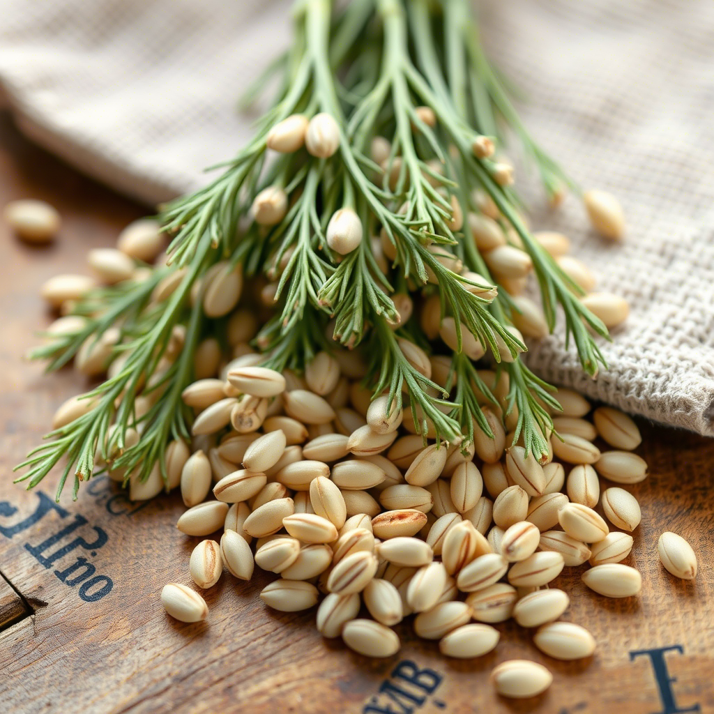
Fennel Seed Digestive Aid
A simple yet effective remedy for immediate relief from digestive discomfort and bloating.
Ingredients:
- 1 tsp fennel seeds
- 1/2 tsp sugar (optional)
Instructions:
- Chew 1 tsp fennel seeds after meals
- Optionally mix with sugar for better taste
- Chew thoroughly before swallowing
Ayurvedic Tips:
Fennel is tridoshic (good for all body types). For Vata, combine with rock sugar. For Pitta, use without sugar. For Kapha, add a pinch of ginger powder.
Ajwain Water for Indigestion
Ajwain (carom seeds) are a powerful digestive aid that can quickly relieve stomach discomfort.
Ingredients:
- 1 tsp ajwain (carom seeds)
- 1 cup water
- 1/4 tsp black salt (optional)
Instructions:
- Dry roast ajwain seeds for 1 minute until aromatic
- Boil water and add roasted ajwain
- Let steep for 5-7 minutes
- Strain and drink warm
- Add black salt if needed for taste
Ayurvedic Tips:
Drink after heavy meals. For Vata, add 1/4 tsp ginger powder. For Pitta, add 1/4 tsp fennel. For Kapha, add 1/4 tsp black pepper.
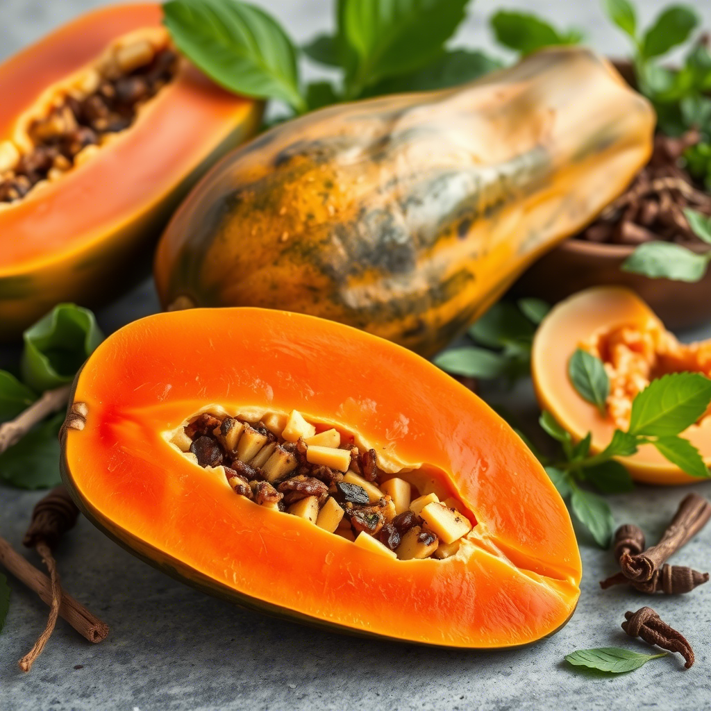
Papaya for Constipation
Ripe papaya contains papain enzyme that aids digestion and helps regulate bowel movements.
Ingredients:
- 1 cup ripe papaya cubes
- 1 tsp lemon juice (optional)
- 1 tsp chia seeds (optional)
Instructions:
- Eat 1 cup of ripe papaya on empty stomach
- Can add lemon juice for better taste
- For extra fiber, add soaked chia seeds
- Follow with warm water
Ayurvedic Tips:
Best for Vata and Kapha types. Pitta types should eat in moderation. For chronic constipation, eat daily for 1 month. Unripe papaya is not recommended.
Immunity Boosters
Traditional formulas to strengthen your body's natural defense mechanisms
Golden Milk (Turmeric Latte)
This ancient Ayurvedic drink combines turmeric with warming spices to create a powerful immunity-boosting elixir.
Ingredients:
- 1 cup milk (dairy or plant-based)
- 1/2 tsp turmeric powder
- 1/4 tsp black pepper
- 1/4 tsp cinnamon powder
- 1/4 tsp ginger powder
- 1 tsp honey or maple syrup
- 1 tsp ghee or coconut oil
Instructions:
- Warm milk in a saucepan over medium heat
- Add turmeric, black pepper, cinnamon and ginger
- Whisk continuously for 2-3 minutes
- Remove from heat and add honey and ghee
- Strain if desired and drink warm before bedtime
Ayurvedic Tips:
For best results, drink daily during seasonal changes. Black pepper enhances turmeric absorption by 2000%. Vata types can add more ghee, Pitta can reduce black pepper, Kapha can add more ginger.
Holy Basil (Tulsi) Immunity Tea
Tulsi, known as the "Queen of Herbs," is revered in Ayurveda for its powerful immune-modulating and adaptogenic properties.
Ingredients:
- 10-12 fresh tulsi leaves (or 1 tsp dried)
- 2 cups water
- 1/2 inch ginger, sliced
- 1 tsp raw honey
- 1/4 tsp black pepper (optional)
- 1 tsp lemon juice (optional)
Instructions:
- Boil water in a saucepan
- Add tulsi leaves and ginger slices
- Simmer for 5-7 minutes on low heat
- Strain into cups
- Add honey and lemon juice when slightly cooled
- Drink 1-2 times daily
Ayurvedic Tips:
Tulsi is tridoshic (balances all three doshas). For maximum benefit, grow your own organic tulsi plant. The leaves can also be chewed raw in the morning for immunity support.
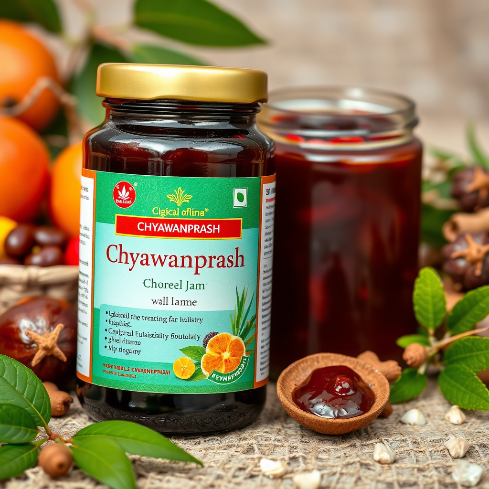
Chyawanprash - Immunity Jam
This ancient Ayurvedic herbal jam contains over 40 ingredients that work synergistically to boost immunity and vitality.
Ingredients:
- 1 tsp chyawanprash (store-bought or homemade)
- 1 tsp warm water or milk
Instructions:
- Take 1 tsp chyawanprash in the morning
- Can mix with warm water or milk
- Consume on empty stomach
- Follow with warm water
Ayurvedic Tips:
Best taken during seasonal changes. For children, reduce to 1/2 tsp. Avoid if diabetic unless sugar-free version. Take for 40 days for maximum benefit.
Amla (Indian Gooseberry) Juice
Amla is one of the richest natural sources of vitamin C and a powerful immunity booster in Ayurveda.
Ingredients:
- 1 fresh amla (or 1 tsp amla powder)
- 1/2 cup water
- 1 tsp honey (optional)
- Pinch of black pepper
Instructions:
- Wash and grate fresh amla
- Mix with water and strain
- Add honey and black pepper
- Drink on empty stomach
Ayurvedic Tips:
Best for Pitta types. Vata types can add 1 tsp ghee. Kapha types can add 1/4 tsp ginger. Avoid if you have hyperacidity.
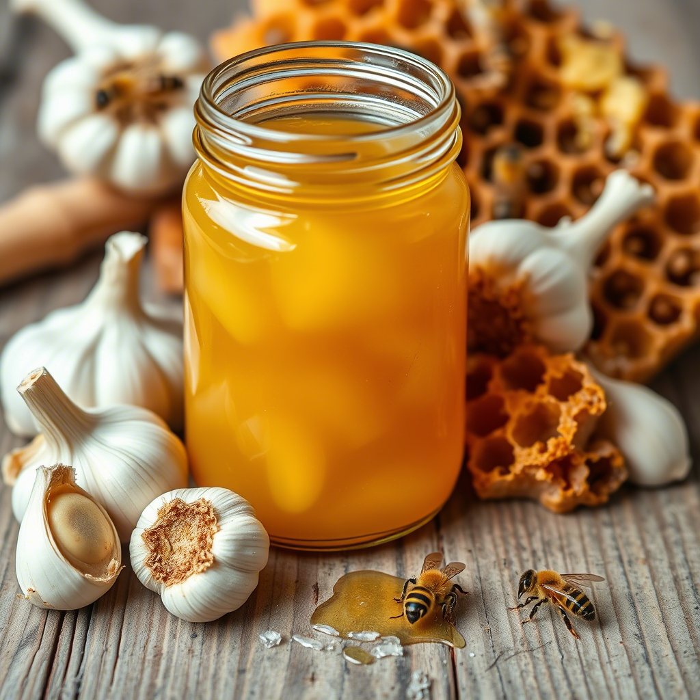
Fermented Garlic Honey
This ancient remedy combines the antimicrobial properties of garlic with the healing power of raw honey.
Ingredients:
- 1 cup peeled garlic cloves
- Raw honey to cover
- 1 small glass jar with lid
Instructions:
- Peel garlic cloves and place in clean jar
- Pour raw honey over garlic until fully covered
- Seal jar and let ferment for 5-7 days
- Take 1 clove daily or 1 tsp syrup
Ayurvedic Tips:
Best for Kapha types. Vata types can take with warm water. Pitta types should use in moderation. The honey will become more liquid as it ferments.
Moringa Immunity Tea
Moringa leaves are packed with essential vitamins and minerals that strengthen the immune system.
Ingredients:
- 1 tsp dried moringa leaves (or 1 tbsp fresh)
- 1 cup hot water
- 1 tsp honey (optional)
- 1 tsp lemon juice (optional)
Instructions:
- Steep moringa leaves in hot water for 5 minutes
- Strain and add honey/lemon if desired
- Drink 1-2 times daily
Ayurvedic Tips:
Moringa is tridoshic. Can also be taken as powder (1/4 tsp) with water. Avoid boiling to preserve nutrients. Best taken in morning.
Giloy (Guduchi) Immunity Juice
Giloy is known as "Amrita" in Ayurveda - the nectar of immortality, revered for its immune-modulating properties.
Ingredients:
- 6-inch giloy stem (or 1 tsp powder)
- 1/2 cup water
- 1 tsp honey (optional)
- 1/4 tsp black pepper
Instructions:
- Crush giloy stem and boil in water for 5 minutes
- Strain and add honey and black pepper
- Drink on empty stomach
Ayurvedic Tips:
Best taken during seasonal changes or when feeling under the weather. Can also be taken as tablets (1 tablet twice daily). Avoid in pregnancy.
Skin Care
Natural solutions for glowing skin, acne, dryness and other common skin concerns
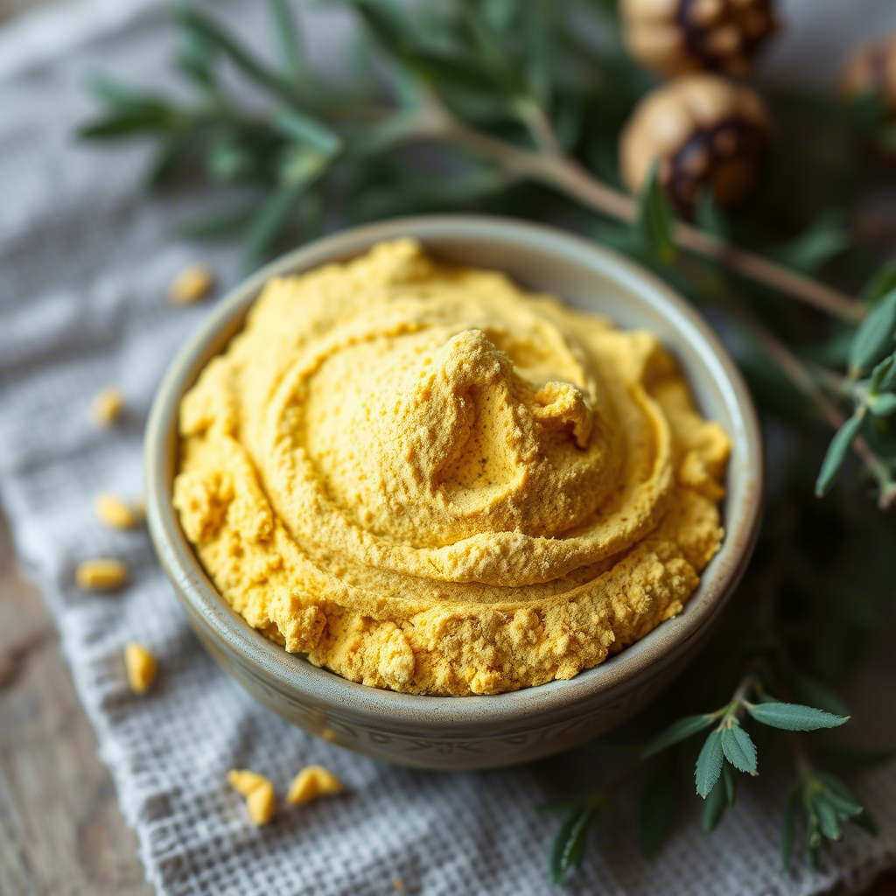
Turmeric & Chickpea Flour Face Pack
This traditional ubtan (herbal paste) has been used for centuries in Ayurveda for radiant, healthy skin.
Ingredients:
- 2 tbsp chickpea flour (besan)
- 1/2 tsp turmeric powder
- 1 tbsp sandalwood powder (optional)
- 1 tbsp raw milk or rose water
- 1 tsp honey
- 3-4 drops lemon juice (for oily skin)
Instructions:
- Mix all dry ingredients in a bowl
- Add milk/rose water gradually to make a paste
- Add honey and mix well
- Apply evenly on clean face and neck
- Leave for 15-20 minutes until semi-dry
- Gently scrub in circular motions while removing
- Rinse with lukewarm water
Ayurvedic Tips:
Use 2-3 times weekly. For Vata skin, add 1 tsp almond oil. For Pitta, use more sandalwood. For Kapha, add 1/4 tsp neem powder. Do a patch test first as turmeric can temporarily stain fair skin.
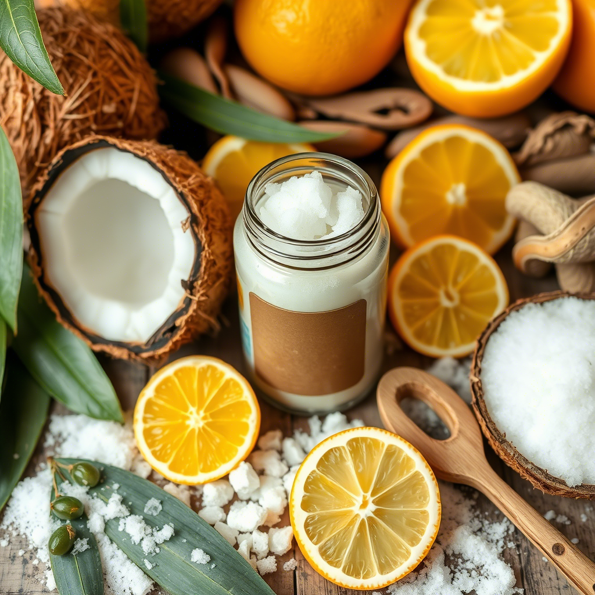
Coconut Oil & Sugar Scrub
This simple two-ingredient scrub is excellent for dry skin, especially during winter months.
Ingredients:
- 1/2 cup coconut oil (solid state)
- 1 cup brown sugar or white sugar
- 5-10 drops essential oil (lavender/rose - optional)
Instructions:
- In a bowl, mix coconut oil and sugar
- Add essential oils if using
- Store in an airtight glass jar
- To use: Take a small amount and massage onto damp skin
- Focus on rough areas like elbows, knees and feet
- Rinse with warm water
Ayurvedic Tips:
Best for Vata skin types. Pitta types can use less sugar and add 1 tbsp oatmeal. Kapha types can add 1 tsp sea salt for more exfoliation. Use within 2 weeks for freshness.
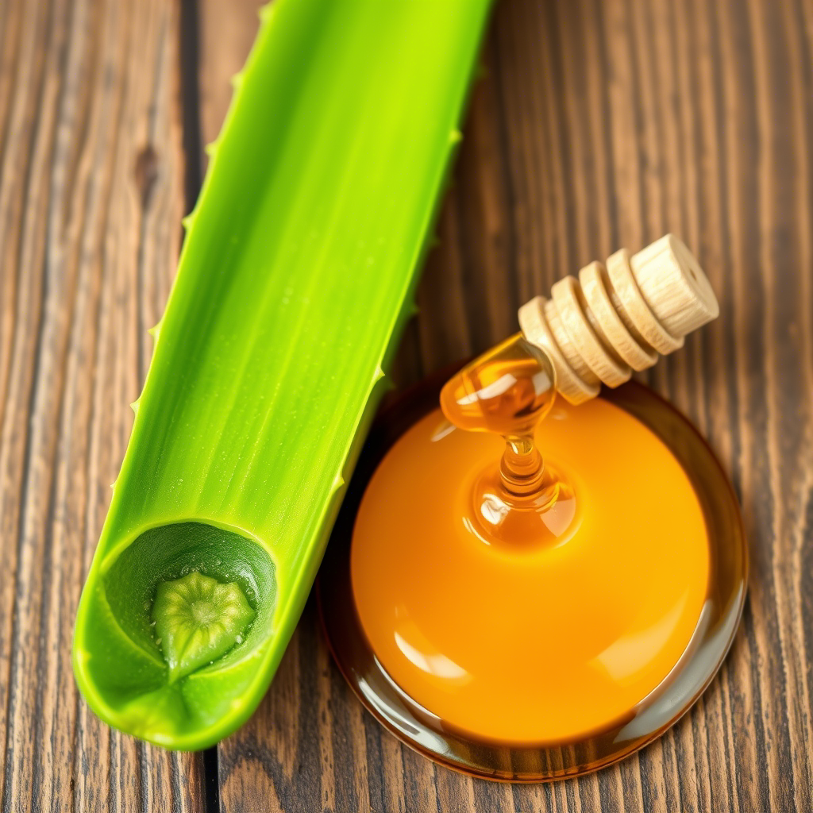
Aloe Vera & Honey Face Mask
This natural face mask hydrates and soothes irritated or oily skin.
Ingredients:
- 2 tbsp fresh aloe vera gel
- 1 tbsp raw honey
- 1 tsp rose water (optional)
Instructions:
- Mix all ingredients into a paste.
- Apply on clean face and neck.
- Leave for 15–20 minutes; rinse with cool water.
Ayurvedic Tips:
Best for Pitta types. Vata types add 1 tsp almond oil. Kapha types use neem powder instead of honey.
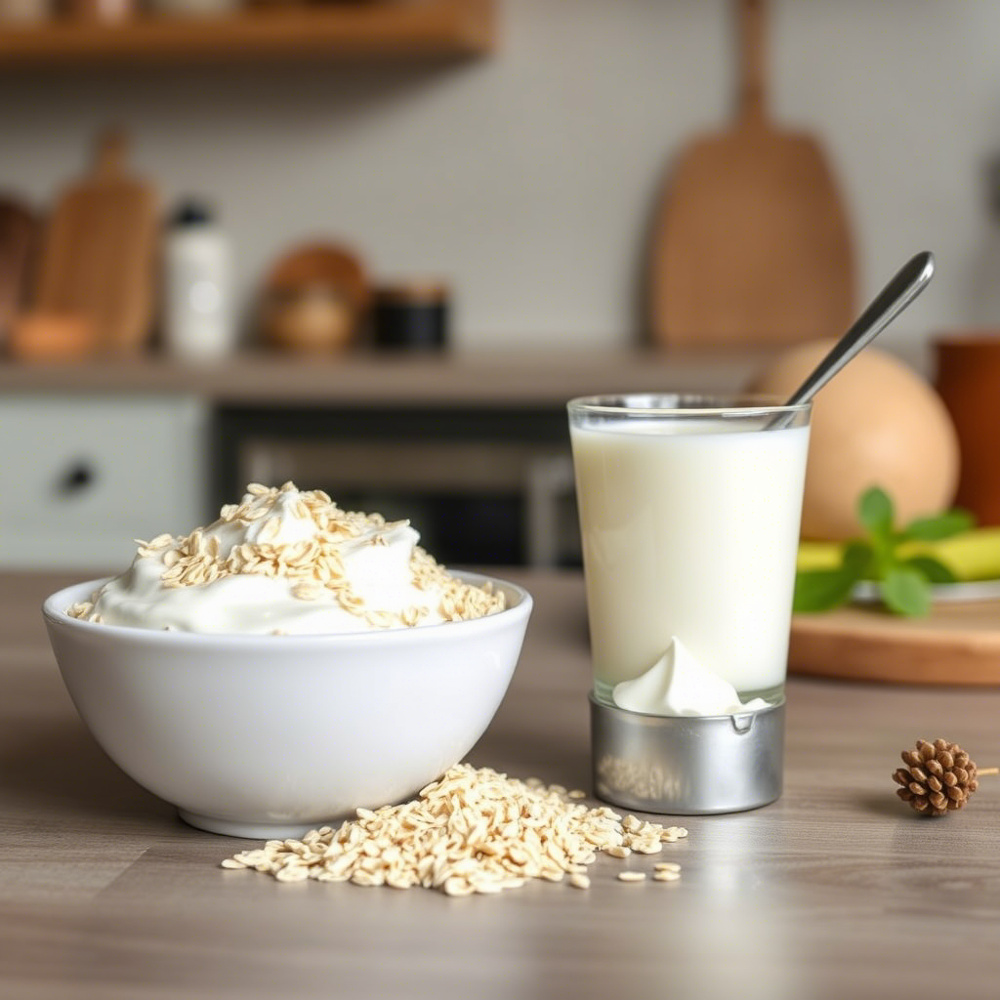
Oatmeal & Yogurt Moisturizer
Gentle moisturizer that's perfect for sensitive or dry skin types.
Ingredients:
- 2 tbsp cooked oatmeal
- 1 tbsp plain yogurt
- 1 tsp honey
- 1 tsp mashed banana (optional)
Instructions:
- Mix all ingredients until smooth.
- Apply on damp face and massage gently.
- Rinse after 15 minutes with lukewarm water.
Ayurvedic Tips:
Use 2x weekly. For oily skin, reduce yogurt to half.
Stress Relief
Natural solutions to calm the mind, reduce anxiety and promote relaxation
Ashwagandha Warm Milk
Ashwagandha is Ayurveda's premier adaptogen, helping the body manage stress while promoting vitality.
Ingredients:
- 1 cup milk (dairy or plant-based)
- 1/2 tsp ashwagandha powder
- 1/4 tsp cardamom powder
- 1/4 tsp nutmeg powder
- 1 tsp ghee or coconut oil
- 1 tsp honey (add after cooling)
Instructions:
- Warm milk in a saucepan over medium heat
- Add ashwagandha, cardamom and nutmeg
- Whisk continuously for 3-4 minutes
- Remove from heat and add ghee
- Let cool slightly before adding honey
- Drink warm 30 minutes before bedtime
Ayurvedic Tips:
Best for Vata and Kapha types. Pitta types should reduce to 1/4 tsp ashwagandha. Avoid during pregnancy. For maximum benefit, consume daily for 40 days, then take 10 days break.
Brahmi & Gotu Kola Memory Tea
This powerful brain tonic combines two of Ayurveda's most revered herbs for mental clarity and relaxation.
Ingredients:
- 1 tsp brahmi powder
- 1 tsp gotu kola powder
- 2 cups water
- 1/2 inch fresh ginger
- 1 tsp honey (optional)
- 1 tsp ghee (optional)
Instructions:
- Boil water in a saucepan
- Add brahmi, gotu kola and ginger
- Simmer for 10 minutes on low heat
- Strain into cups
- Add honey and ghee if using
- Drink warm in the morning or early evening
Ayurvedic Tips:
Excellent for students and knowledge workers. Avoid in case of low thyroid function. Can also be taken as powder (1/4 tsp each) with warm water if tea preparation is not possible.
Lavender & Chamomile Tea
A soothing blend of calming herbs that help ease tension and promote restful sleep.
Ingredients:
- 1 tbsp dried chamomile flowers
- 1 tbsp dried lavender buds
- 2 cups hot water
- 1 tsp raw honey (optional)
Instructions:
- Steep herbs in hot water for 7–10 minutes
- Strain and drink warm before bedtime
Ayurvedic Tips:
Excellent for Vata and Pitta. Avoid if allergic to daisy family plants.
Magnesium-Rich Almond Milk
This magnesium-rich drink helps relax muscles and calm the nervous system naturally.
Ingredients:
- 1 cup almond milk
- 1 tsp almond butter
- 1/2 tsp ashwagandha powder
- 1 tsp raw honey
Instructions:
- Warm milk gently
- Stir in all ingredients
- Drink 30 minutes before bed
Ayurvedic Tips:
Add cinnamon for flavor and additional calming effects.
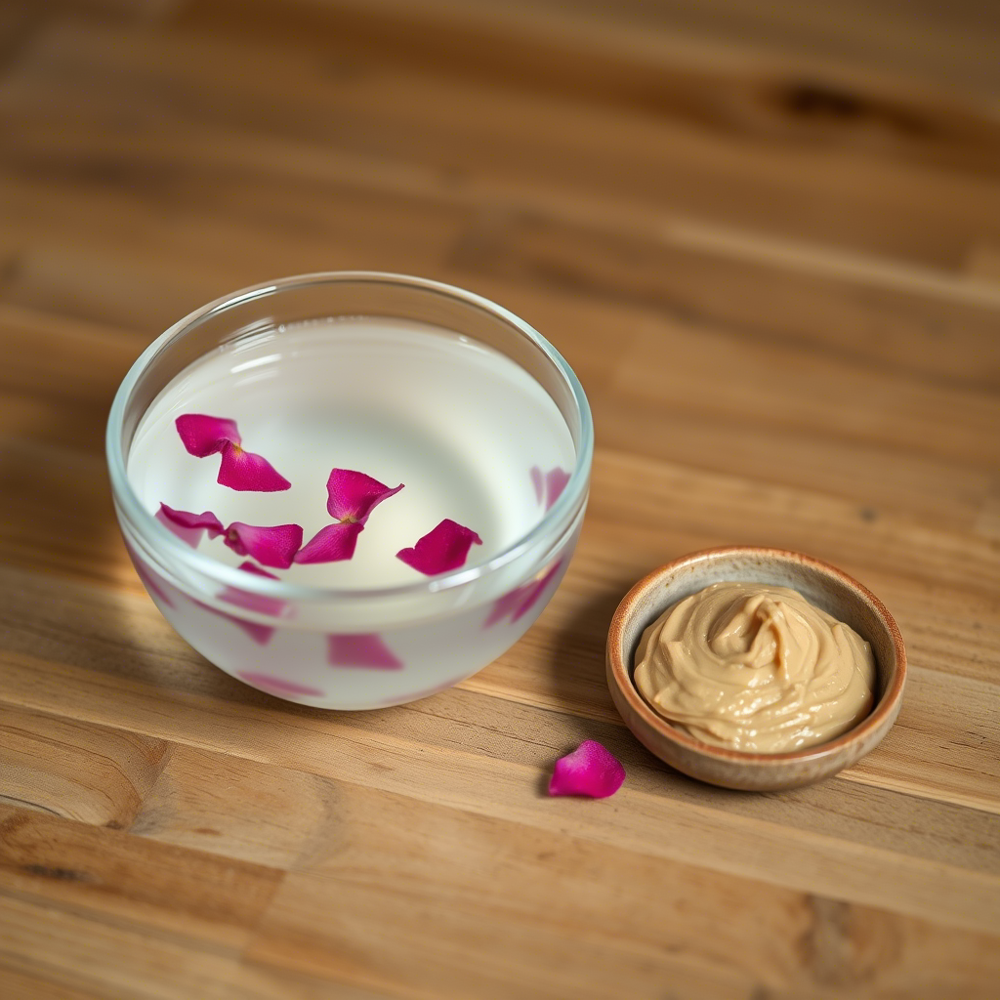
Rose Water & Sandalwood Paste
A cooling face paste that calms the senses and reduces emotional agitation.
Ingredients:
- 2 tbsp sandalwood powder
- Rose water (as needed)
Instructions:
- Make a paste using rose water
- Apply on forehead or wrists
- Let dry before removing
Ayurvedic Tips:
Ideal for Pitta-type stress.
Mint & Lemon Detox Water
This refreshing herbal water helps clear mental fog and supports digestive health.
Ingredients:
- 1 lemon (sliced)
- 5–6 mint leaves
- 1 liter filtered water
Instructions:
- Muddle mint leaves slightly
- Add to water with lemon slices
- Chill for an hour and sip throughout the day
Ayurvedic Tips:
Great for summer heat-related stress.
Respiratory Health
Natural solutions for cough, cold, congestion and respiratory wellness
Tulsi-Ginger Respiratory Tea
This warming tea combines tulsi's antiviral properties with ginger's expectorant qualities for respiratory relief.
Ingredients:
- 10-12 fresh tulsi leaves
- 1 inch ginger, sliced
- 5-6 black peppercorns
- 1 tsp licorice root (optional)
- 2 cups water
- 1 tsp honey (add after cooling)
Instructions:
- Crush tulsi leaves and ginger slightly
- Boil water and add all ingredients except honey
- Simmer for 10 minutes covered
- Strain into cups
- Add honey when slightly cooled
- Drink warm 2-3 times daily when congested
Ayurvedic Tips:
For dry cough, add 1 tsp ghee. For wet cough, add 1/4 tsp turmeric. Avoid licorice in high blood pressure. Inhale the steam while drinking for added benefit.
Black Pepper & Honey Syrup
This simple syrup helps clear mucus and soothe irritated airways naturally.
Ingredients:
- 1 tsp black pepper
- 1 cup warm water
- 2 tsp raw honey
Instructions:
- Boil water and add pepper
- Let steep for 5 minutes and strain
- Add honey; drink warm
Ayurvedic Tips:
Take twice daily during cold season.
Licorice & Cinnamon Tea
Licorice root is a powerful demulcent that coats and soothes inflamed mucous membranes.
Ingredients:
- 1 tsp licorice root
- 1 stick cinnamon
- 2 cups boiling water
- 1 tsp honey
Instructions:
- Simmer ingredients for 10 minutes
- Strain and drink warm
Ayurvedic Tips:
Not recommended for long-term use or high blood pressure.
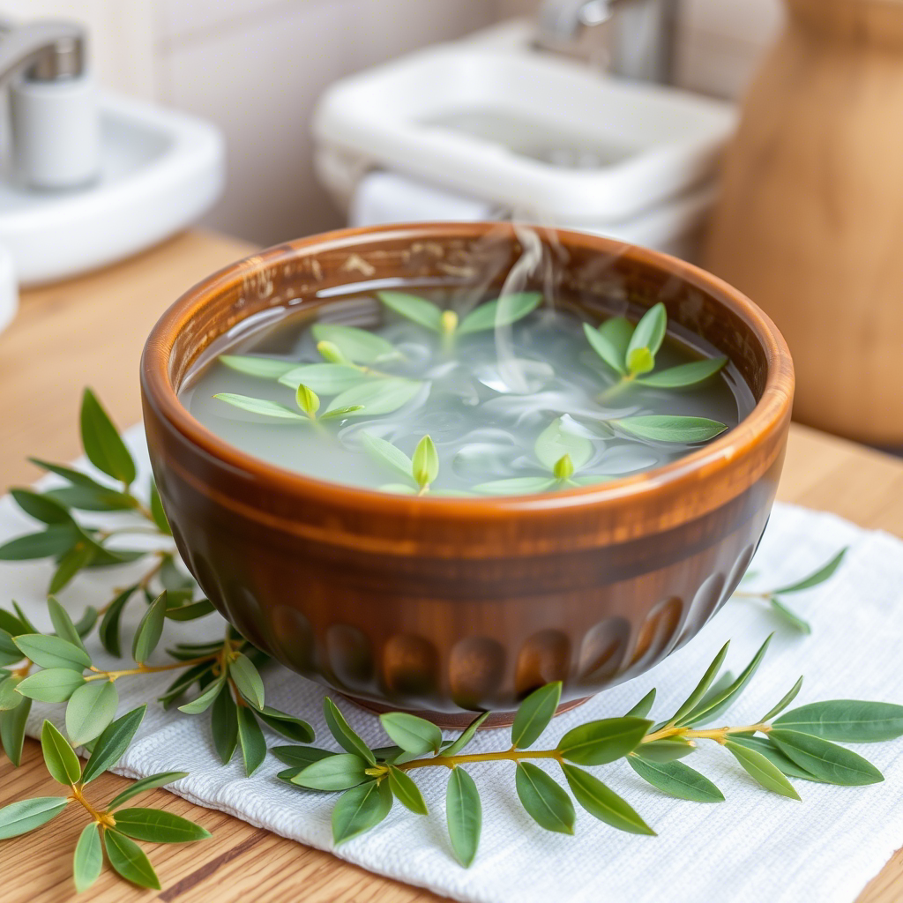
Eucalyptus Steam Inhalation
A natural decongestant that opens nasal passages and soothes irritated respiratory tissues.
Ingredients:
- 1 bowl hot water
- 3–5 drops eucalyptus essential oil
Instructions:
- Pour hot water into a bowl
- Add oil, cover head with towel, and inhale steam for 5–10 minutes
Ayurvedic Tips:
Can add peppermint oil for enhanced effect.
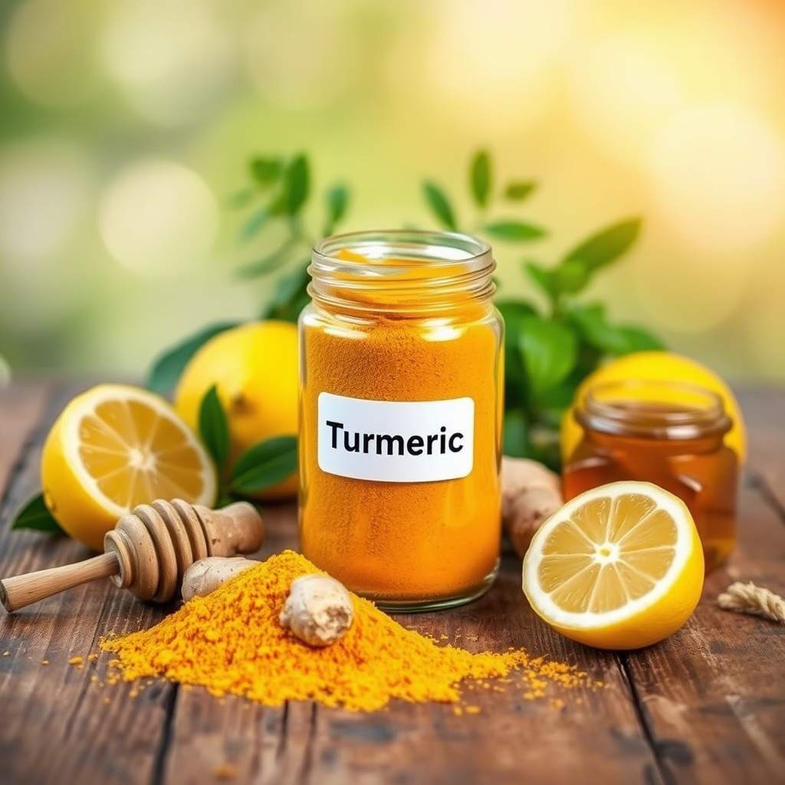
Turmeric Gargle
A simple yet effective remedy to soothe sore throat and reduce bacterial load.
Ingredients:
- 1 cup warm water
- 1/4 tsp turmeric
- Pinch of salt
Instructions:
- Mix well and gargle for 30 seconds
Ayurvedic Tips:
Do 3x daily for best results.
Sleep Aid
Natural solutions for insomnia, restlessness and quality sleep
Nutmeg Warm Milk
Nutmeg is a traditional Ayurvedic remedy for insomnia, especially when combined with warm milk.
Ingredients:
- 1 cup warm milk (dairy or plant-based)
- A pinch of nutmeg powder (about 1/8 tsp)
- 1/4 tsp cardamom powder
- 1 tsp ghee or coconut oil
- 1 tsp honey (optional)
Instructions:
- Warm milk gently (do not boil)
- Add nutmeg and cardamom
- Stir in ghee
- Let sit for 2-3 minutes
- Add honey if using (when slightly cooled)
- Drink 30 minutes before bedtime
Ayurvedic Tips:
Very effective for Vata-type insomnia. Do not exceed nutmeg dosage - more is not better. Can also massage feet with warm sesame oil before bed for deeper sleep.
Valerian Root Tea
This herbal tea helps calm an overactive mind and induce natural sleep without side effects.
Ingredients:
- 1 tsp valerian root powder
- 2 cups hot water
- 1 tsp honey (optional)
Instructions:
- Steep root in hot water for 10 minutes
- Strain and drink warm 30 minutes before bed
Ayurvedic Tips:
Avoid during pregnancy or while taking medications.
Warm Banana & Almond Milk
This natural sleep drink combines magnesium-rich banana and calming almond milk for better sleep.
Ingredients:
- 1 banana
- 1 cup almond milk
- Pinch cinnamon
Instructions:
- Blend banana with warm milk and cinnamon
- Drink 1 hour before bedtime
Ayurvedic Tips:
Add 1 tsp ghee for extra grounding effect (Vata types).
Foot Massage with Sesame Oil
This simple Ayurvedic practice calms the nervous system and prepares the body for restful sleep.
Ingredients:
- Warm sesame oil
Instructions:
- Massage oil gently into feet before bed
- Cover feet with cotton socks
Ayurvedic Tips:
Pittas can use coconut oil instead. Kaphas should use mustard oil once weekly.
Hair Care
Natural solutions for hair growth, dandruff, and scalp health
Herbal Hair Growth Oil
This traditional Ayurvedic hair oil combines nourishing herbs to promote healthy hair growth and prevent hair loss.
Ingredients:
- 1/2 cup coconut oil (cold-pressed)
- 2 tbsp bhringraj leaves (or powder)
- 2 tbsp amla pieces (or powder)
- 1 tbsp fenugreek seeds
- 5-6 hibiscus flowers (or 2 tbsp petals)
- 1 tsp neem leaves (optional for dandruff)
Instructions:
- Heat coconut oil in a pan on low heat
- Add all herbs and let them infuse for 15-20 minutes
- Strain the oil through a muslin cloth
- Store in a glass bottle in cool place
- Massage into scalp 2-3 times weekly
- Leave for at least 1 hour before washing
Ayurvedic Tips:
For best results, warm oil slightly before application. Vata types can add 1 tsp sesame oil. Pitta types can add 1 tbsp aloe vera gel. Kapha types can add 1 tsp mustard oil.
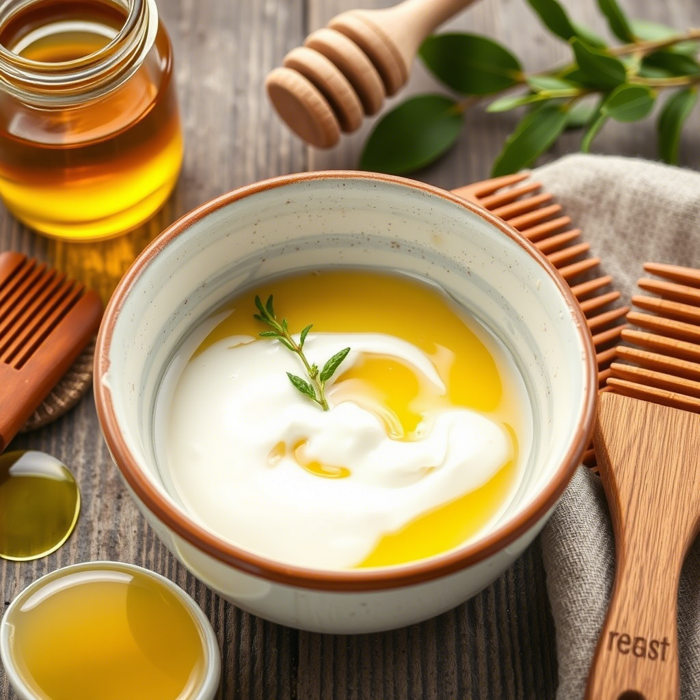
Egg & Yogurt Hair Mask
This protein-rich hair mask helps repair damaged hair and restore natural shine and softness.
Ingredients:
- 1 egg (whole for dry hair, white only for oily hair)
- 2 tbsp plain yogurt
- 1 tbsp honey
- 1 tbsp olive oil or coconut oil
- 5 drops rosemary essential oil (optional)
Instructions:
- Beat egg until frothy
- Mix in yogurt, honey and oil thoroughly
- Apply to damp hair from roots to tips
- Cover with shower cap and leave for 30 minutes
- Rinse with cool water (hot water will cook egg)
- Shampoo as usual
Ayurvedic Tips:
Use once weekly. For extra conditioning, wrap warm towel around head after application. Add 1 tbsp amla powder for premature graying. Avoid if allergic to eggs.
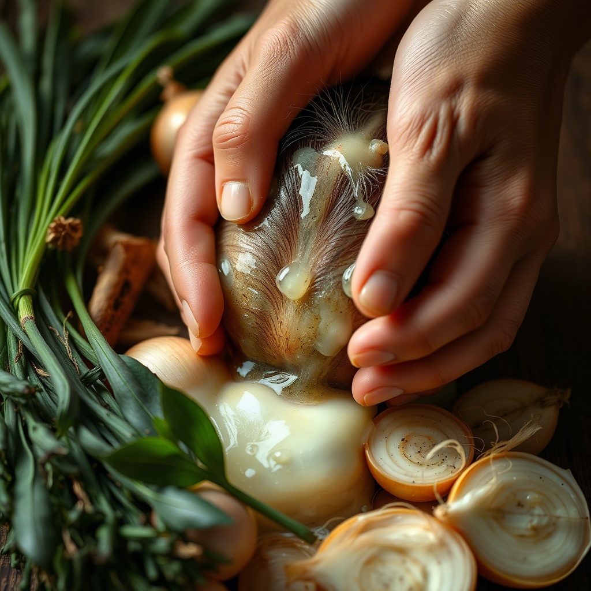
Onion Juice Scalp Treatment
Rich in sulfur and antioxidants, onion juice helps strengthen hair follicles and reduce hair fall naturally.
Ingredients:
- 1 onion (grated and juice extracted)
- A few drops lemon juice
Instructions:
- Extract juice from grated onion
- Add a few drops of lemon juice
- Apply directly onto scalp
- Leave for 30 minutes before washing
Ayurvedic Tips:
Rinse thoroughly to remove odor. Best used fresh daily. Can be mixed with aloe vera for sensitive scalps.
Neem & Coconut Oil Treatment
This antimicrobial blend is perfect for treating dandruff and maintaining a healthy scalp environment.
Ingredients:
- 2 tbsp coconut oil
- 1 tsp crushed neem leaves
Instructions:
- Heat oil gently with neem leaves
- Cool and apply on scalp
- Massage well and leave overnight
Ayurvedic Tips:
Excellent for oily or dandruff-prone scalps. Wash off in morning with herbal shampoo.
Coffee Hair Rinse
Caffeine in coffee boosts blood circulation to hair follicles and supports stronger hair growth.
Ingredients:
- 1 cup cooled brewed coffee
- 1 cup water
Instructions:
- After shampooing, pour through hair as final rinse
- Do not condition afterward
- Let air dry or dry naturally
Ayurvedic Tips:
Helps darken hair naturally. Use 2x weekly for best results.
Joint Pain Relief
Natural solutions for arthritis, joint inflammation and mobility

Herbal Joint Pain Relief Oil
This warming herbal oil helps alleviate joint stiffness and pain through its anti-inflammatory properties.
Ingredients:
- 1/2 cup sesame oil (or coconut oil)
- 2 tbsp fresh ginger, grated
- 2 tbsp garlic, crushed
- 1 tbsp fenugreek seeds
- 1 tbsp camphor (optional)
- 1 tbsp wintergreen essential oil (optional)
Instructions:
- Heat oil in a pan on low heat
- Add ginger, garlic and fenugreek seeds
- Let simmer for 15 minutes until aromatic
- Strain through cheesecloth into glass jar
- Add camphor and wintergreen oil when cooled
- Massage into affected joints 2-3 times daily
Ayurvedic Tips:
Best for Vata-type joint pain. For Pitta, use coconut oil instead of sesame. For Kapha, add 1 tbsp mustard oil. Warm oil slightly before application for better absorption.
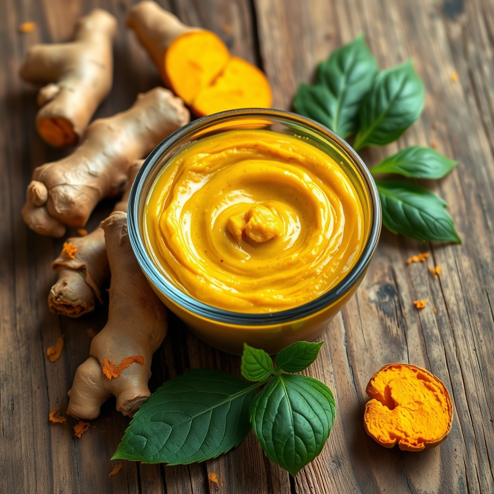
Turmeric-Ginger Anti-Inflammatory Paste
This powerful internal remedy helps reduce joint inflammation from within when taken regularly.
Ingredients:
- 1 tsp turmeric powder
- 1/2 tsp ginger powder
- 1/4 tsp black pepper
- 1 tsp honey or ghee
- 1/2 cup warm water or milk
Instructions:
- Mix turmeric, ginger and black pepper
- Add honey or ghee to form a paste
- Stir into warm water or milk
- Drink 1-2 times daily
- Can also be applied externally as paste
Ayurvedic Tips:
For best results, take on empty stomach. Black pepper enhances turmeric absorption. Continue for at least 40 days for chronic conditions. Avoid if taking blood thinners.
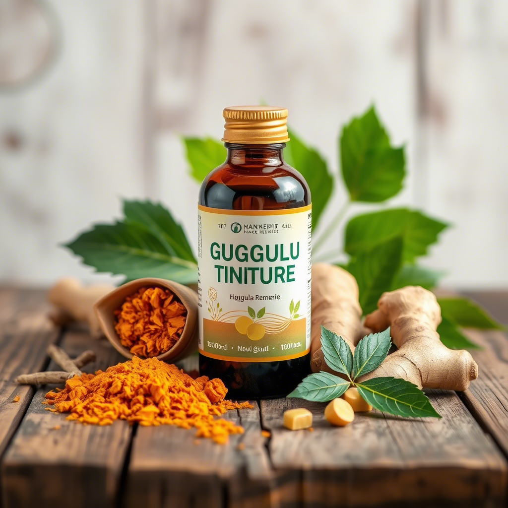
Guggulu Tincture (Internal Use)
Guggulu is an ancient Ayurvedic resin known for its potent anti-inflammatory and detoxifying properties.
Ingredients:
- 1 dropper guggulu tincture
- 1/4 cup warm water
Instructions:
- Mix tincture with warm water
- Take once or twice daily
- Best taken with meals
Ayurvedic Tips:
Consult physician if taking medications. Best for Vata types. Pitta can combine with licorice. Kapha can add black pepper.
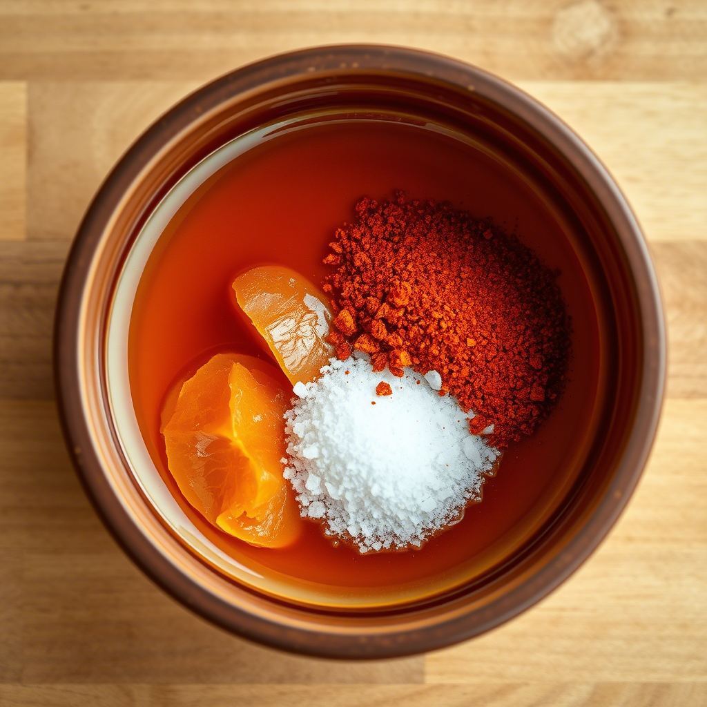
Apple Cider Vinegar & Cayenne Rub
This warming rub helps draw out coldness and stagnation from joints, especially helpful in Vata-type pain.
Ingredients:
- 2 tbsp apple cider vinegar
- 1/2 tsp cayenne powder
- 1 tbsp olive oil or sesame oil
Instructions:
- Mix all ingredients well
- Apply to affected area
- Rub gently for 5 minutes
- Wrap with cloth and leave for 30 minutes
Ayurvedic Tips:
Avoid broken skin. Do not use on Pitta-dominant burning pain. Wash hands thoroughly after use.
Ayurvedic Preparation Tips
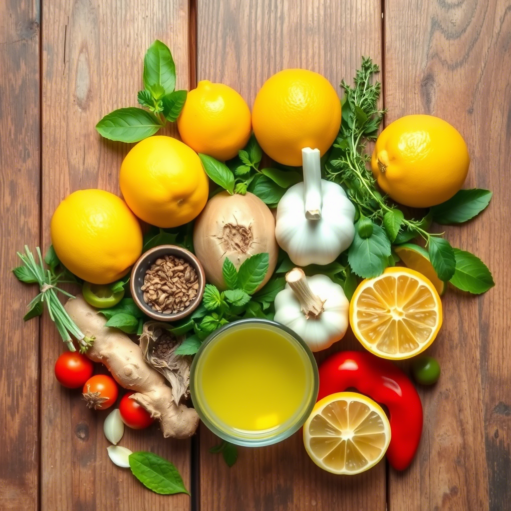
Use Fresh Ingredients
Ayurveda emphasizes using fresh, seasonal ingredients for maximum prana (life force).
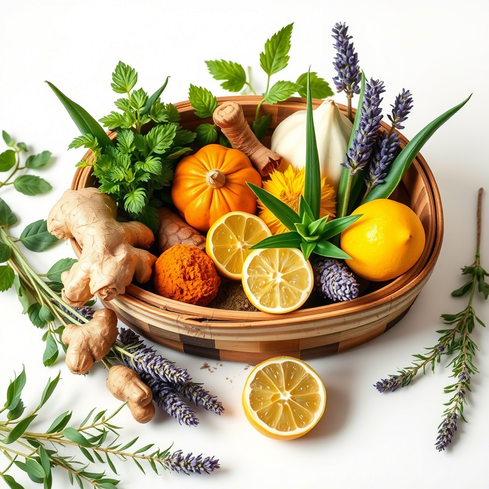
Prepare Mindfully
Cook with positive intention - your state of mind affects the remedy's energy.
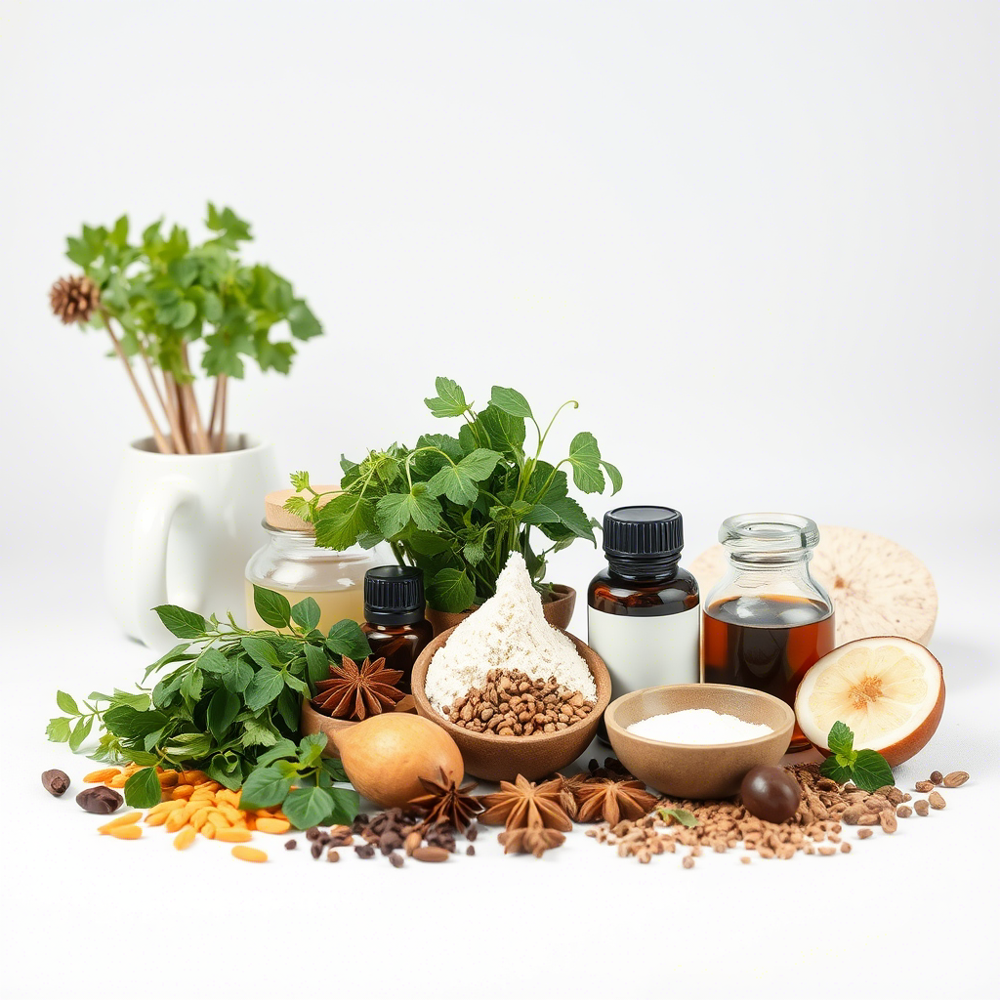
Store Properly
Most remedies should be prepared fresh. Store in glass (not plastic) if needed.